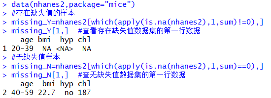

（1）行删除法
以nhanes2作为演示示例，将函数na.omit()作用于数据集上删除存在缺失值的行，并对比处理前后数据集中存在缺失值的情况。
函数!complete.cases()与函数complete.cases()返回值均为逻辑值，对于函数!complete.cases()，若存在缺失值则返回TRUE，不存在缺失值返回FALSE，由于逻辑值TRUE和FALSE分别等价于数值1和0，因此可以用函数sum()来获取缺失值信息。上述运行结果表明：原数据集中有12行包含缺失值，采用行删除法处理缺失值后的数据集中不含缺失值。
（2）均值/中位数/众数插补法
以数据集nhanes2作为示例，对数值型变量chl中的缺失值进行简单插补。
上述代码详细展示了三种简单插补方法的实现过程，其中众数插补法的实现过程为：先用sort(table(nhanes2$chl))求变量chl的频数并排序,运行结果显示众数为187，再用函数impute()进行特定值插补。
（3）回归法
选取DMwR包中algae数据（藻类开花预测训练数据）进行演示。该数据集共包含18个变量，200个观测值 ，前三个变量是因子型其余为数值型，部分变量包含缺失值。首先通过函数cor()计算变量的相关系数来探索变量间的相关关系。
上述代码中cor()函数设定参数use="complete.obs"可以使R在计算相关系数时忽略含有NA的纪录。而函数symnum()是以符号的方式对给定的数字或逻辑值向量或数组进行编码，用来改善结果的输出形式使结果可视化。
最后一行则显示了各个符号所代表的相关程度，例如变量NH4和变量NO之间的相关程度为0.6
从输出结果可直观的看出：变量PO4和变量oPO4存在较强的相关性，然后利用函数lm()函数计算其线性关系。运行结果如下：
上述结果显示变量PO4和oPO4之间的线性关系表达式为：
PO4=1.293xoPO4+42.898
通过线性关系来计算缺失值的插补值即可，如果变量OP4中存在多个缺失值，通过构造以下函数（PO4_es）来计算缺失值的估计值较为简便，然后使用sapply()函数对缺失值进行插补，函数sapply()的第一个参数是一个向量，第二个参数是一个函数，作用是将函数应用到第一个参数向量的每一个元素。运行结果如下：
通过线性关系来计算缺失值的插补值即可，如果变量OP4中存在多个缺失值，通过构造以下函数（PO4_es）来计算缺失值的估计值较为简便，然后使用sapply()函数对缺失值进行插补，函数sapply()的第一个参数是一个向量，第二个参数是一个函数，作用是将函数应用到第一个参数向量的每一个元素。运行结果如下：
（4）热平台/冷平台插补法
结合mice包下的nhanes2数据集分别用热平台插补法和冷平台插补法进行插补演示。首先将数据集中存在缺失值的样本和无缺失值的样本区分开来，分别储存在不同的数据集中，运行结果如下：

热平台插补法即是对存在缺失值的数据集（missing_Y）中的每个样本在无缺失值的数据集（missing_N）中找到与该样本相似的样本，用相似样本的对应值代替缺失值。例如，对于missing_Y中的第2个样本，插补方法如下：
在实际操作中，通常很难找到与需要插补样本完全相同的样本，可以采用冷平台插补法，即先按照某些变量将数据分层，在层中对缺失值使用均值插补。仍以missing_Y中的第2个样本为例，以变量age和hyp为分层变量，求取age为“20-39”且hyp为“no”的样本均值作为该缺失值的插补值，其插补方法如下：
(5)多重插补法
结合mice包下的nhanes2数据集演示多重插补法完整的实现过程：
上述多重插补过程采用“cart(分类树回归)”的方法生成了5个完整的数据集，为节省篇幅，这里未展示mice()函数运行的结果。然后对5个插补数据集采用线性回归模型进行统计分析，上述输出结果为其统计分析的平均结果，根据输出的P值来看，远远小于0.05，说明插补效果不错。
除此之外，通过检查分析过程中创建的对象可以获得更多插补信息；complete()函数可以用来观察m个插补数据集中的任意一个。